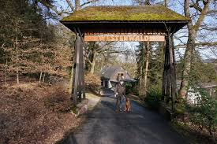

Kloster Arnstein

Ein historisches Kloster bei Obernhof, das Ruhe und eine schöne Aussicht auf die Lahn bietet.
Entfernung: etwa 25 Minuten mit dem Auto
Schloss Oranienstein in Diez

Ein prächtiges Barockschloss, das interessante Einblicke in die Geschichte bietet.
Entfernung: etwa 20 Minuten mit dem Auto
Hohe Burg Monschau bei Montabaur

Diese Burg bietet schöne Wandermöglichkeiten und ist ein beliebtes Fotomotiv.
Entfernung: etwa 20 Minuten mit dem Auto
Naturpark Nassau

Ein Naturpark mit Wander- und Radwegen, kleinen Bächen und vielen Aussichtspunkten.
Entfernung: etwa 30 Minuten mit dem Auto
Stöffel-Park in Enspel

Ein Industriepark und Geopark mit Fossilienfunden und Events zur Erdgeschichte.
Entfernung: etwa 30 Minuten mit dem Auto
Wild- und Freizeitpark Westerwald in Gackenbach
Ein familienfreundlicher Park mit Wildgehegen, Spielplätzen und einem Streichelzoo.
Entfernung: etwa 15 Minuten mit dem Auto